Operating Documentation
Direction 5500113, Rev# 3
Discovery MR450 1.5T Service Methods
Module Version 1.0, Version Date 4/25/07
Operating Documentation |
The goal of eddy current compensation is to minimize unwanted magnetic fields produced by eddy currents generated when pulsing the gradient coil. During the compensation process, the magnetic field is measured as a function of time and location and the zero order (B0) and first order (linear) spatial components are derived. The system resonant frequency is then changed in time as a function of applied gradients to track the B0 component. The gradient waveforms driven through the gradient coil are altered as a function of time to minimize the unwanted linear magnetic fields.
As a default, Grafidy 3 displays a matrix of cells sorted by component type and iteration number. In these cells are values representing the peak deviations of the residual field error curve within predefined time ranges. The tool stores the residual field error curves and they may be displayed. To display a curve, select a filled-in cell then click the [Show] button. The measured data is plotted in red and the best-fit curve is plotted in black. The best-fit curve parameter values (exponential time constants and amplitudes) are listed below the plot.
Illustration 1 illustrates an example of the how the residual field error curve reduces during the compensation process. These plots show data resulting from 3 consecutive iterations (2-4). The plots on the left side of the figure are shown with the Auto Scale function off so that all three curves are shown with the same vertical scale. As can be seen, the amount of residual field error decreases. The plots on the right side of the figure show the same data as shown on the left side except the Auto Scale function is on. The Auto Scale function adjusts the vertical scale to minimum and maximum value of the data. In this case, the maximum value for the 2nd iteration is 0.68, 0.02 for the 3rd iteration, and 0.002 for the 4th iteration. Note that while the residual field error becomes smaller, the similarity between the measured curve and fitted curve (goodness of fit) becomes poorer. When those two curves have little in common, as shown in iteration 4, it is not likely that any further iterations will improve compensation.
Illustration 1: Interpreting Grafidy Plots

When the residual field error curve is being displayed, the user has access to additional information related to the data collected. To access this information, select the [More…] button. A window is created with a slider bar providing access to all of provided information. Illustration 2 shows an example of the output reporting the coil positions relative to the center of the gradient coil. The two coils along the axis of the selected component are shown. The first column of position values lists the X, Y and Z location of one coil in centimeters. The second column lists the X, Y and Z location of the second coil in centimeters.
Illustration 2: Coil Position
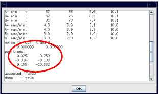
Illustration 3 shows an example of the output of the pass/fail specifications, target values, peak deviation of the unsmoothed data and peak deviation of the smoothed data for each time interval. The tool uses the results from the smoothed curve to determine pass/fail status. These are the same values shown in the matrix cell.
Illustration 3: System Spec’s, Target And Smoothed Values

Illustration 4 shows an example of the output of information related to the raw data collected when performing long mode (these values are not reported for short and very long mode data). Data is reported summarizing the characteristics of the FID magnitudes collected from each coil. The A+ designation indicates data from the first coil when a positive gradient was applied. The A- designation indicates data from the first coil when a negative gradient was applied. Similarly, B+ and B- designate data from the second coil when a positive and negative gradient was applied, respectively. The 'max' label (e.g. A+ max) indicates the maximum value of the FID magnitude curve. This value gives an indication of the signal strength. Similarly, the 'min' label indicates the minimum value of the FID magnitude curve. This value gives an indication of the signal level at the end of the FID. Finally, the 'max/min' label indicates the ratio of the two values. This value is related to the T2* of the sample.
Illustration 4: Magnitude Data Summary
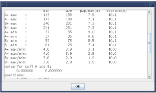
The first column of data shows maximum value of the item from the family of curves (all of the FIDs from that coil using the particular gradient polarity). The second column is the mean value of the item from the family of curves. The third column lists the normalized peak-to-peak percent deviation of initial magnitude signal. This value gives an indication of the relative value of the T1 (longitudinal spin relaxation time) of the sample and the TR used by the pulse sequence (time between consecutive RF pulses). A small value indicates that sufficient time was provided to allow the sample to relax. Finally, the fourth column gives the normalized value of the variation (standard deviation) of the signals from the family of curves.
Illustration 5 shows an example of the output of the calibration parameter values (previous params) used to collect the selected residual field error curve. The first column gives the time constant values in milliseconds and the second column gives the associated amplitudes in percent applied gradient. The number of rows indicates the number of exponentials used to compensate the component.
Illustration 5: Previous Calibration Parameters
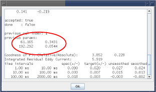
Illustration 6 shows an example of the output of the calibration state of this iteration. The accepted state indicates whether the tool or the user applied the best-fit calibration parameters to the system. 'true' indicates that the new values were accepted and downloaded to the system calibration files. 'false' indicates that the new values were not downloaded to the system. The done state indicates whether auto mode has completed. 'true' indicates that auto mode has finished this mode. 'false' indicates that auto mode has not completed this mode.
Illustration 6: Calibration State

Illustration 7 shows an example of the output of the list of scan parameters used to collect the residual field error curves. The following parameters are shown:
grad_amp: amplitude of the eddy current producing gradient in 1000 G/cm (e.g. 1500 = 1.5 G/cm)
pwflat: duration of the flattop of the eddy current producing gradient in usec
pwramp: duration of the ramp (both up and down) of the eddy current producing gradient in usec
start: time point of the first data collected in usec relative to the end of the flattop of the eddy current producing gradient
tbreak: time point in usec related to when the FID spacing converts from linear to exponential spacing
tend: maximum time point collected relative to the end of the flattop of the eddy current producing gradient
maxoverlap: maximum percentage of FID overlap allowed (long mode)
nfids: total number of FIDs collected
tdaq: duration of the data acquisition period in usec
run_num: name of the associated raw data file (/usr/g/mrraw/P'run_num'.7)
Illustration 7: Scan Parameters

When in Auto Mode, a number of signal checks are performed to ensure the proper state of the grafidy fixture. The following signals are examined from every channel and an error is reported if a problem is found.
The peak-to-peak deviation in initial magnitude signal as a function of FID is checked to verify that it is below a maximum value. This value is a measure of the relative value of the T1 (longitudinal spin relaxation time) of the sample and the TR used by the pulse sequence (time between consecutive RF pulses). A small value indicates that sufficient time was provided to allow the sample to relax.
The standard deviation of the field plot is checked to verify that it is below a maximum value. This value is related to the SNR of data. A small deviation indicates high SNR.
The location of each sample in the magnet bore is measured. A message (refer to Illustration 8) is presented if any sample is more than 1.5cm from its ideal location. When presented the user has three options: 1) abort which stops data acquisition so that the fixture can be repositioned in the bore, 2) continue which allows the next scan to start but will continue to check fixture position, and 3) continue without further prompting which allows the next scan to start and suppresses any further position error messages.
Illustration 8: Sample Position Error Message
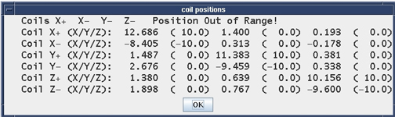
It is sometimes necessary to clear the eddy current compensation parameters on a system. This function is performed using the 'Zero Out' Tab (refer to Illustration 9). To clear compensation parameters, select the desired component or components then press the [Zero Out Cal Values] button. The calibration parameters for the selected components are then cleared in the calibration file (/usr/g/caldir/grafidy.cal).
Illustration 9: Zeroing Old Cal Files
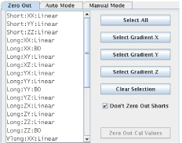
There are several methods provided to select components on the [Zero Out] tab. To select individual components, click it in the provided list. The <ctrl> and <shift> keys allow for multiple selections. Selected components are shown highlighted. The naming convention of the listed components is mode (short, long, very long): donor axis (applied gradient axis) acceptor axis (spatial axis) : type (Linear, B0).
Group select buttons are provided to allow quick selection of multiple components. Pushing the [Select All] button will highlight all of the components in the list. Pushing the [Select Gradient X] (or Y or Z) will select all of the components related to pulsing that specific gradient. For example, pushing the [Select Gradient Y] button selects the YX, YY, YZ linear and YY B0 long and very long components (short YY linear as well if the [Don't Zero Out Shorts] is not active). The [Clear Selection] button will deselect all of the components in the list.
A [Don't Zero Out Shorts] radio button is supplied to control whether the short mode components are selected when using the group select buttons ([Select All] and [Select Gradient]). The default for this radio button is ON. In this state, the short modes will not be selected (unless selected manually from the list). Clicking the radio button will toggle the state. When OFF, the appropriate short modes will be selected when using the group select buttons.
The 'Auto Mode' tab (Illustration 10) is provided to allow automatic eddy current calibration. By default, all three gradient axes are selected, the long and very long modes are selected and both modes have the maximum number of iterations set to 5. This is the recommended configuration. When the [Scan] button is selected in this configuration, the very long modes will be calibrated first. Calibration pulsing the X gradient will be run to completion followed by the Y gradient then Z gradient. When the very long mode is complete, the long mode is then calibrated, again starting with the X gradient followed by the Y gradient then Z gradient.
Illustration 10: Auto Mode Tab
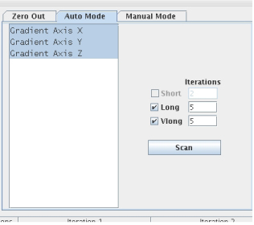
A list is provided to allow de-selection of one or more axes. In addition, radio buttons (check boxes) are provided to turn off one of the modes (long or very long) if desired. When deselected, the gradient axis and/or mode is not performed. Finally, text boxes are provided to allow the maximum number of iterations to be changed for each mode. The mode will stop iterating after this number of iterations and the next axis or mode will begin even if the components are not in spec.
Note that at this time, the short mode is disabled. Calibration using the short mode must be performed in 'Manual Mode' presented in Section 7.
When working with BRM or CRM systems, when the Grafidy tool is started the User Interface (UI) is presented with the Zero Out tab selected. Calibration in auto mode is done by activating the Auto Mode tab and selecting the Scan button. When working with a TRM system, however, when the Grafidy tool is started a window is displayed presenting three options as shown in Illustration 11.
Illustration 11: Whole, Zoom, and the Whole and Zoom options Options
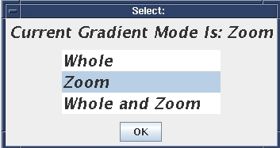
If 'Whole' or 'Zoom' is selected, the gradient mode is set to the selected value and the UI is presented like with BRM or CRM systems. Calibration in auto mode is identical to that described above. To calibrate the other mode, the UI must be exited and restarted and the other mode selected in the initial popup window.
If the 'Whole and Zoom' selection is made in the initial popup window, a totally automated process is performed, calibrating both modes without operator interaction. The tool shows the UI and starts the calibration of the Whole mode. When complete, the UI is closed then reshown with the system in Zoom mode. Calibration of the Zoom mode then starts automatically. When complete, the UI is closed and a results summary is given as shown in Illustration 12.
Illustration 12: Illustration 12: Pop-Up After The Whole And Zoom Is Complete.
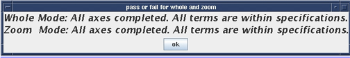
In each mode, the complete calibration is performed (long and very long mode, X, Y and Z gradients applied) with the maximum iteration values for both long and very long mode set to 5. The fixture and signal checks are only performed for the Whole mode. Finally, in this mode if the default short mode compensation parameters are not used for the Zoom mode, a popup stating this fact is not displayed when the software is started as usual. To allow compensation to proceed without operator interaction, a popup is displayed AFTER the Zoom mode has been calibrated. The popup will be presented before calibration if the default short mode compensation parameters are not used for the Whole mode. See Illustration 13. Two log files are generated which may be reviewed after both modes have been calibrated (see Section 10).
Illustration 13: Short TC Pop-Up
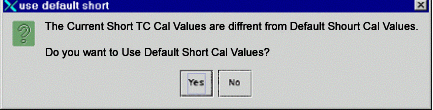
At times it is useful to examine the field error data curves to monitor progress or to debug issues. To display a curve, select a populated cell and then click [Show] as shown in Illustration 14.
Illustration 14: Show Button
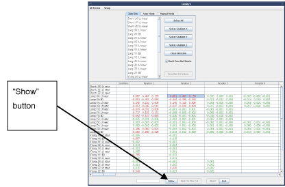
The measured data is plotted in red and the best-fit curve is plotted in black. Functions have been provided to allow manipulation of the plot axes. For long mode data, by default the vertical axis is set to ±0.2% and the horizontal axis is displayed from 0-2sec. For very long mode data, by default the vertical axis is set to ±0.2% and the horizontal axis is displayed from 1-150 sec. For short mode data, the vertical axis is displayed from –20% to 120% by default for linear on-axis data. The vertical axis for short B0 data defaults to ±0.2%. Both short mode data types default to a –1500us to 500us horizontal axis display.
Selecting the [Auto Scale] radio button toggles the state of the function. When the function is OFF, the default vertical axis limits are used. When ON, the vertical axis limits are set to the maximum and minimum values of the plotted curve.
Selecting the [Full Plot] radio button toggles the state of the function. When the function is OFF, the data collected is displayed in the plot along with the best-fit curve. When ON, the compensation exponential functions used to collect the data are added to both the collected data curve as well as the best-fit curve. Note that if there was no compensation applied for the selected component when the data was collected, selecting the [Full Plot] function will not change the appearance of the displayed curve.
There are several functions provided in the [Default Time] pull down menu to control the horizontal (time) axis. Selecting the [Default Time] option resets the horizontal axis to the default values. Selecting the [Full Time] option displays the entire data curve collected. For example, if long data was collected out to 4s (longer than the 2s displayed by default), the [Full Time] option will display the entire curve. Selecting the [Zoom Start] option displays 0-100ms of the data curve for long mode data. If another type of data besides long is being displayed when the [Zoom Start] option is selected, the plot is not changed.
The [End (ms)] pull down list along with the text box next to it provide a method to define the minimum and maximum axis display limits for both the vertical and horizontal axes. Selecting the desired entry from the list and entering the value in the text box will update the display. Illustration 15 shows an example of the appearance of a data curve before and after setting the end time of the horizontal axis to 100ms.
Illustration 15: Examining A Fit
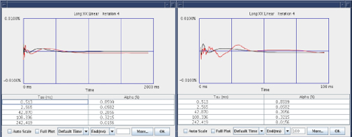
An additional method is provided to set the vertical axis to a subset of symmetric limits (minimum limit equals the negative of the maximum limit). This method is accessed by right clicking on the plot. A list of values is presented (refer to Illustration 16). Selecting a value from the list updates the displayed plot.
Illustration 16: Setting Auto Scale Mode
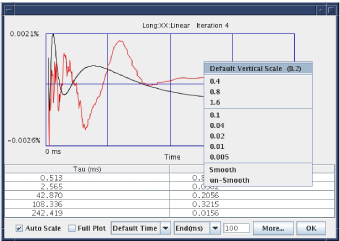
Also provided in the list when the user right-clicks on the plot is the 'Smooth' and 'un-Smooth' options. These options control whether the data is shown after or before a multi-point sliding averaging window has been applied to the data. The default mode is to display the smoothed data. All pass/fail checks are performed on the smoothed data. Displaying the unsmoothed data gives an indication of how the smoothing operation affected the data being used by the tool.
A 'Goodness of Fit' parameter is calculated for each data curve. The parameter gives an indication of how well the best-fit curve matches the collected data curve. This parameter is calculated from the ratio of the misfit parameter and the eddy current area parameter (refer to Illustration 17). The misfit parameter is the square of the point-by-point difference between the best-fit curve and the data. The eddy current area parameter is the sum of the square each measured data point. Therefore, a small 'Goodness of Fit' value indicates a good fit (difference between the fit and data is small) and a large 'Goodness of Fit' value indicates a poor fit.
The 'Goodness of Fit' parameter is used in Auto mode as one mechanism to determine whether the component is calibrated and if another iteration is required. If the 'Goodness of Fit' value is low, the tool will continue to iterate even if the peak value is below the target. If the 'Goodness of Fit' value is large, the tool will stop iterating even if the peak value is greater than the target.
Illustration 17: Goodness Of Fit
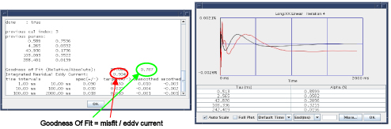
The Manual Mode tab is provided to allow individual components to be calibrated (refer to Illustration 18). In the Manual Mode, all of the signal checks are performed (see Section 2) but, since the scan has already completed, an option to abort is not presented if an error is found. In addition, unlike in auto mode, there is not a way to turn the checking off. Due to the fact that signal from all six samples is collected and therefore all four components are available, only the selection of an entire mode is available to be selected. That is, you may select the Long mode pulsing the Z axis but not the Long ZX component.
Similar to the 'Zero Out' tab, there are several methods provided to select the modes to be run. To select individual modes, click it in the provided list. The <ctrl> and <shift> keys allow for multiple selections. Selected modes are shown highlighted. Group select buttons are provided to allow quick selection of multiple modes. Pushing the [Select All] button will highlight all of the modes in the list. Pushing the [Select Gradient X] (or Y or Z) will select all of the modes related to pulsing that specific gradient. For example, pushing the [Select Gradient Y] button selects the Long: Y axis, Vlong: Y axis and DC: Y axis (Short: Y axis is not selected). The [Clear Selection] button will deselect all of the modes in the list.
Illustration 18: Manual Mode Tab
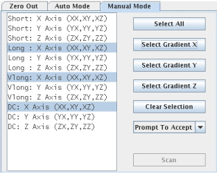
Once the desired modes are selected, selecting the [Scan] button begins acquisition of highlighted modes. Whether the resulting best-fit curve calibration parameters are used by the system (written to the calibration files) depends on the selection in the [Prompt To Accept] list (refer to Illustration 19).
In this mode, after data acquisition is complete, the data curves and associated best-fit curves are presented to the user. In the window showing the data curve, the user may select the [Accept] button or the [Cancel] button. The [Accept] button writes the best-fit calibration parameters to the calibration files. Choosing the [Cancel] button does not update the calibration parameters. The data curves for all four components are presented one at a time.
Note: The “Prompt to Accept” function is not supported for the DC Mode.
In this mode, the calibration parameters are written to the calibration files. The data curves are not automatically presented to the user.
Note: For “DC Mode” there are no values written to the Cal Files.
In this mode, the calibration parameters are not written to the calibration files. The data curves are not automatically presented to the user.
Illustration 19: Prompt To Accept
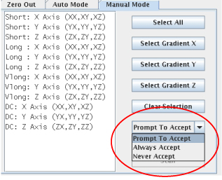
In the matrix summary view, there is column between the component label and first iteration labeled 'Conditions'. If the [Show] button is chosen (Shown in Illustration 20) with one of these matrix cells selected, a popup window is presented which summarizes the initial and current calibration state of the associated component. Unlike the cells in the iteration columns, this information can be shown even if data has not yet been collected for the component.
Illustration 20: Condition Cell
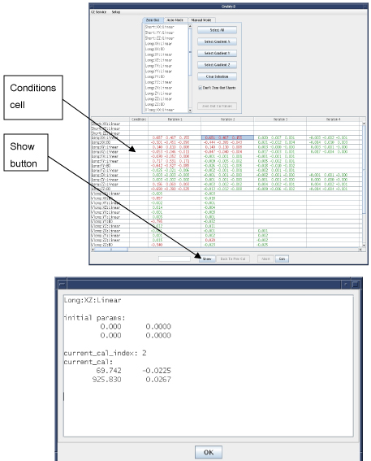
In the 'Condition' popup window the following information is displayed:
Initial calibration parameters of the component – the values of the time constants and amplitudes for the associated component when Grafidy 3 was invoked (Long XZ Linear in this example shown by Illustration 20).
The current calibration index (current_cal_index) – the iteration that generated the calibration parameters that are in the calibration file (iteration 1 in this example shown in Illustration 20). A value of 0 indicates that the values are the initial values. A value of –1 indicates that the calibration values are zero. A value of –2 indicates that the values are set to the default (short mode only).
The current calibration parameter values – the time constants and amplitudes currently applied for the associated component.
Refer to Illustration 21 for a summary of the relationship between the calibration parameter values and the iterations performed.
Illustration 21: Scan Iteration Relationships
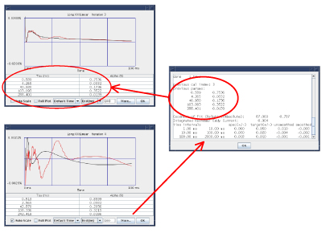
In this example (Illustration 21), fitting data collected in the 3rd iteration generated the circled calibration values. When accepted (as was the case here), these calibration values went into the calibration file (grafidy.cal) as well as the associated files that are downloaded to the hardware [grad_ecc_coeff.dat, b0_ecc_coeff.dat]. These values were then used in the next (4th) iteration. To verify this, the [More…] button was selected when displaying the data from the 4th iteration. The calibration values used to collect the data are listed under “previous parameters”. As shown here, the value of “previous cal index” is 3 showing that the calibration values used were generated by the 3rd iteration and the values are the same as the values listed as the best-fit parameters in the 3rd iteration data display.
With this relationship in mind, there may be times when selecting the calibration values from previous iterations is desirable. Section Section 9.1 and Section 9.2 describes two methods to accomplish this.
Illustration 22: Using Cal Values From A Previous Iteration
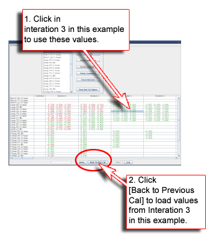
Using the method shown in Illustration 22 will load the calibration values used to collect the data shown for the selected iteration (3rd iteration in this example) to the calibration files. Most of the time these are the parameters obtained from the fit of the data collected in the previous iteration.
Using the method shown in Illustration 23 will download the best-fit calibration parameter values (to the calibration files) generated by the selected iteration (1st iteration in this example). This method can be used to manually accept the best-fit parameters from the last iteration if not done previously or to restore parameters from a previous iteration.
Illustration 23: Using Cal Values Generated By A Given Iteration
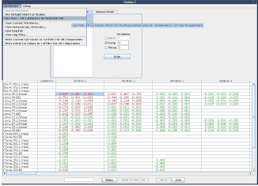
If one of the “Conditions” cells is highlighted and the [Use Post-Fit Cal Parameters for Selected Cell] menu item is selected, then the calibration parameter values that were on the system when the Grafidy3 tool was started will be restored for that associated eddy current component.
For example, Illustration 24 shows the output of selecting the [Show] button with a 'Conditions' cell highlighted. With this same cell highlighted, if the [Use Post-Fit Cal Parameters for Selected Cell] menu item is selected, the parameter values listed in the 'initial params:' section are restored for that component.
Illustration 24: INITIAL CALIBRATION VALUES
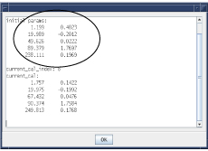
Selecting the [Show] button with the same cell selected after this process has been followed will show the same parameter values in 'current cal' section as in the 'initial params' section and the 'current cal index' value will be 0.
If a 'Conditions' cell associated with the short mode (short xx, yy, zz linear) is selected and then the menu item [Use Default Short Cal Params] is pushed, the tool will load the default short calibration parameter values for the selected component (short xx linear, for example) into the calibration files.
If the service key is not present, many of the options listed below will be unavailable. If the key is not available and you are a GEHC Service Personnel, you can activate all options by selecting [Service Password] and entering the Service Password.
When a calibration session is completed and the [Exit] button is selected, the session is saved to a log file. A file is created for each Grafidy3 session. These log files may be viewed by selecting [View Log Files…] from the 'GE Service' menu (refer to Illustration 25).
Illustration 25: Viewing A Log File
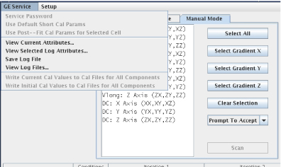
When selected, a list of log files is displayed (refer to Illustration 26). Note that there is a pulldown list that controls the type of data listed. The default is to show all of the log files. The log files created when in Whole mode of a TRM system, the Zoom mode of a TRM system, log files created on systems with a BRM/CRM or all of the log files may be displayed. With the list displayed, click on the desired log file and press the [OK] button. The data will be loaded and the display will appear as if the calibration session was just completed.
Illustration 26: Choosing A Log File
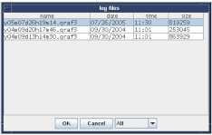
If selected, the current (last 'accepted') calibration parameter values are saved to the calibration files for all components. This menu item is useful when the calibration files are lost. Simply load the log file from the last calibration session and select this option.
If selected, the calibration parameter values that were in the calibration files when the current Grafidy3 session was started are reloaded. This applies to all components.
If selected, the current state of the Grafidy3 session is written to a log file. This file is independent of the file automatically generated when the tool is exited. This function does not have to be used unless there is a high risk of software instabilities or power failure (it allows you to start where you left off by loading in the file).
If selected, the information related to the system currently being used is shown in a popup window. This information includes the hospital name, gradient slew rate, gradient driver, gradient mode (whole/zoom), and start time (when Grafidy 3 was invoked).
If selected, the information related to the system on which the log file was generated is shown in a popup window (refer to Illustration 27). This feature is usefull if the log file was copied to another system to be viewed. If on a different system than the one used to collect the data, only viewing is allowed (downloading calibration parameter values and continued scanning is not allowed).
Illustration 27: View Selected Log Attributes
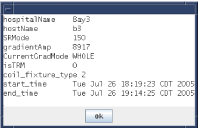
The [Abort] button is used to stop data acquisition before it has completed. When selected, a message will be presented stating to also push the [Stop Scan] key on the keyboard. Once both are selected, the tool performs several clean-up steps. The [Scan] button will become active when the tool is ready to continue the calibration.
Selecting the [Exit] button writes out the log file and closes the calibration window. Note that the tool does not allow the user to exit if calibration parameter values are not confirmed. That is, calibration parameter values may not be updated without confirming them (collecting the corresponding data curves). If the [Exit] button is selected when calibration parameters have been updated and not confirmed, the user is given a choice to go back to the last confirmed calibration values or to return and collect the missing data. If the first option is chosen, the last accepted values that were confirmed are downloaded to the calibration files and the calibration window closes. If the second option is chosen, the Manual Mode is presented with the unverified components selected. Select the [Scan] button to start the data acquisition (and do not accept the fits).